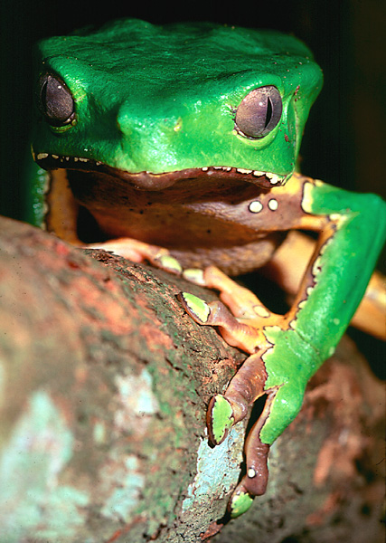

Phyllomedusa bicolor

Giant Waxy Monkey Tree Frog
Known for skin secretions loaded with biologically active peptides. The Matses and Mayoruna tribes employ Phyllomedusa bicolor secretions applied to self inflicted skin burns to produce an agonizing attack of diarrhea, vomiting, tachycardia and systemic collapse, that is followed by a state of hyper-acuity of the senses attended by abundant energy and stamina without need for food or drink. Among other components, it contains dermorphin and deltorphin, peptides with analgesic properties 2000 times more potent than morphine at the cerebral level.
MAKING MAGIC
by Peter Gorman
Omni Magazine, July 1993
A story about the Matses Indians and their use of Sapo, the venom of Phyllomedusa bicolor.
Piers Gibbon's "Jungle
Trip" (This site contains a video of the experience.)
"What begins as a
plant hunt in the Peruvian jungle turns into a terrifying, mind-altering journey
for amateur ethnobotanist Piers Gibbon. He's searching for the violently
hallucinogenic Ayahuasca brew, which Amazonian shamans use to enter the spirit
world and talk to the plants.
Travelling deep into the jungle, Gibbon finally reaches the Brazilian border
where he's subjected to a dose of frog poison. Finally, he finds a shaman
willing to reveal his secrets - but only if Piers spends several nights alone
drinking the Ayahuasca brew. The final initiation ceremony demands that Piers
swallow some of the Shaman's phlegm, but how far is he prepared to go in pursuit
of knowledge and experience?"
Well, bicolor eh! there's a strange one. My research disagrees
with peter
gormans stuff about visions - both for me (one time only) and the matses
guys I spoke with the bicolor experience is not directly visionary
(afterwards in dreams yes perhaps)...it was for me an ordeal medicine, the
power comes from having survived it. I felt like I was going to die and then
almost wanted to, all defence shields were down (which has helped me
recognise when defence shields are up). Nasty nasty stuff, but I am glad I
did it and wd probably do it again!
This stuff is poison, really venomous. Oh and one crucial thing you didn�t
get from the programme - the venom must dry out thoroughly before use...it
may stop you breathing otherwise - please pass that info on!
Peace!
Piers
Care sheet and more information for those who would keep these frogs as pets.
A cleverly written site by frog breeders, with photos.
A site with photos of a mating pair and information in French. The Alta Vista Bablefish translation is here.
More excellent photos here and here.
Back to Bufo alvarius